pronetblog.by
Используем протокол WebDAV для Яндекс.Диск
Всем хорошего настроения! В этой статье автор попробует воплотить в жизнь очень прикольную идею. Будем подключать сетевой протокол WebDAV для Яндекс.Диск.
Возможно, кто-то из читателей сейчас не совсем понимает суть наших действий, но на самом деле все очень даже просто. Сегодня мы присоединим к компьютеру удаленное "облако" как сетевой диск либо флешку. Согласитесь, это очень удобно.
Содержание статьи:
Но перед тем как переходить к техническим деталям, позвольте рассказать предысторию написания данной публикации. Если помните, то совсем недавно мы с вами говорили про замечательные сервисы Яндекс.Диск и Google Диск.
Так вот, казалось бы, автор блога разобрал их по косточкам, нарезал много картинок и в общем-то был весьма доволен собой. А тут вдруг - бац, и прилета вот такая телега от одного из постоянных читателей:
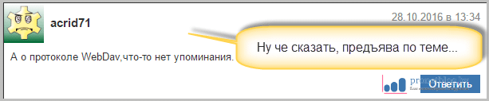
Ну а мы то что, мы и знать не знаем никаких протоколов WebDAV. Но когда началось глубокое вникание в эту тему, то сразу появилось огромное желание сделать новый пост. А читателю с ником acrid71 респект и уважуха за наводку.
Теперь давайте переходить к деталям. Сейчас подопытным "кроликом" станет облачное хранилище от всем известной компании Яндекс. Сразу все манипуляции будем осуществлять штатными средствами Windows 10.
Итак, нажимаем левой кнопкой мыши на "Пуск", а затем уже правой клавишей жмем по пункту "Проводник". В открывшемся диалоговом меню выбираем строку с названием "Подключить сетевой диск":
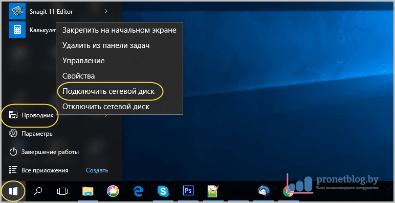
В следующем окне указываем произвольную букву сетевого диска и в поле "Папка" вводим адрес как на скриншоте ниже:
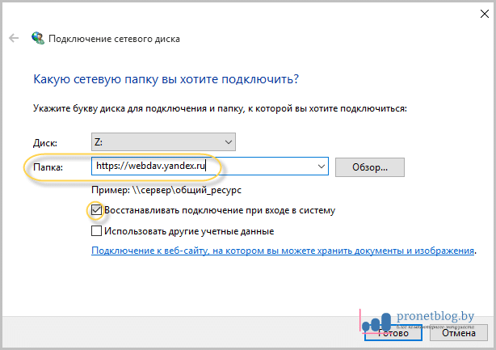
На данном этапе будет запущена попытка соединения по протоколу WebDAV с удаленным сервисом Яндекс.Диск. В случае если она завершится неудачей либо появится сообщение о неправильном имени папки, следует еще раз повторить все вышеописанные действия.
Если же опять случится такая беда, тогда нужно попробовать в поле "Папка" ввести вот такой адресок:
Ну а мы идем дальше. Сейчас система попросит ввести данные от учетной записи Яндекса, что мы любезно делаем:
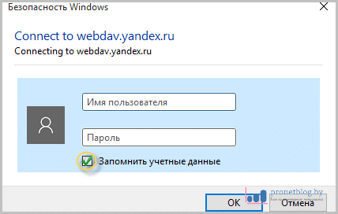
Если же вы не совсем понимаете, что это за такие данные, то вернитесь, пожалуйста, в начало публикации. Там есть ссылка на недавний материал о Диске. Перечитайте его и сразу все встанет на свои места. Также не забываем поставить галку напротив пункта "Запомнить учетные данные".
Ну вот, собственно, и весь шухер закончился. Теперь можно зайти в "Мой компьютер" и увидеть там подключенный сетевой диск с содержимым удаленного облачного хранилища:
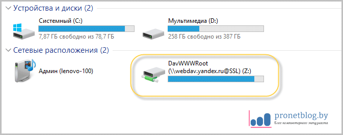
Ребята, скажу вам честно, это просто класс. Такой схемой пользоваться очень удобно. Плюс весь трафик шифруется, что очень хорошо для защиты от перехвата передаваемых файлов.
Но есть еще одна реализация данной технологии и она будет еще круче. В этом случае все будет построено на специальном плагине популярного файлового менеджера Total Commander.
В общем, для того чтобы подключить Диск от Яндекса с помощью протокола WebDAV таким способом, нужно скачать небольшое расширение с одноименным названием по этой ссылке и установить его. Как это правильно сделать, можно увидеть здесь:
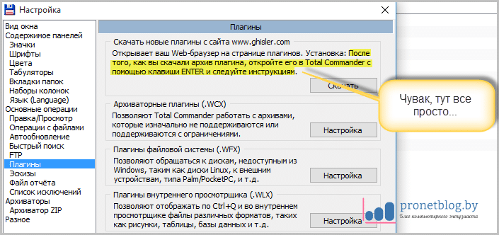
После завершения инсталляции плагина следует нажать на кнопку "Сеть/FS-плагины" и выбрать папку с названием WebDAV:
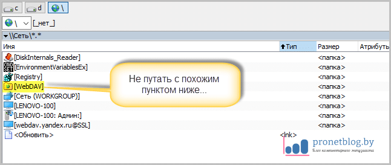
Затем следует войти в нее и нажать многофункциональную клавишу F7 для создания нового подключения:
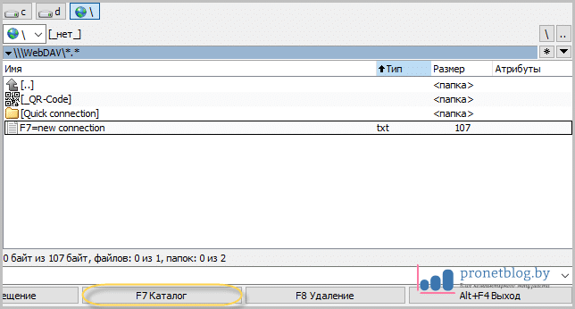
В случае автора, только что созданное соединение будет называться по умолчанию: "F7=new connection".Так, теперь перед нами открывается окошко с самыми главными параметрами:
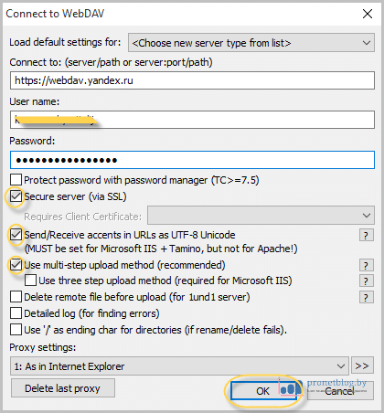
Ну вот и все, друзья, после этого мы получили полноценный доступ к содержимому удаленного сервера. Осталось лишь войти в папку под именем нашего сетевого подключения и все на этом:
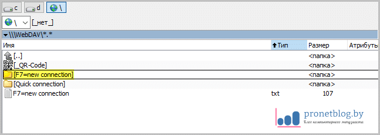
Если же вдруг захотите снова изменить какие-то параметры, то вот вам в помощь добротная шпаргалка:
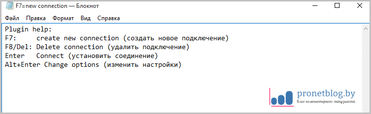
На этом статья подходит к своему логическому завершению, поскольку тема, как подключить сетевой протокол WebDAV для Яндекс.Диск, исчерпана полностью. Осталось только перезапустить Total Commander и полюбоваться сетевым диском:
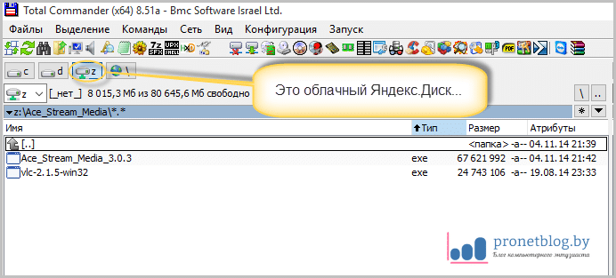
В ближайших статьях мы еще попробуем подключить по такой технологии и Cloud Mail.Ru. Поэтому если у вас вдруг остались какие-то вопросы, то смело задавайте их в комментариях.
Ну а в завершение, как всегда, можно немного расслабиться и посмотреть видео про бессмысленные в реальной жизни суперпособности человека.
С уважением, Комаровский Виталик
Обновлено: 30.10.2016 — 22:33